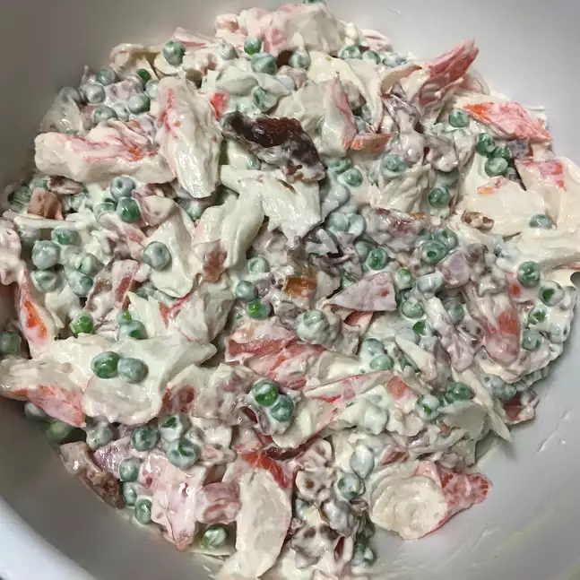

Pea and Crab Salad

Description
Imitation crab, peas and bacon blend beautifully in this salad. A great salad to use for any holiday dinner or just for a spring salad.
Ingredients
- 6 14 slices bacon
- 1 ¼ pounds imitation crabmeat, flaked
- 1 (16 ounce) package frozen green peas
- ¾ cup mayonnaise, or to taste
- 2 teaspoons onion powder
- 1 ½ cups diced tomatoes
Steps
- Place bacon in a large, deep skillet. Cook over medium-high heat until evenly brown and crisp. Drain, crumble and set aside.
- In a large bowl, mix together the imitation crab, bacon and peas. Stir onion powder into mayonnaise, and then stir into the crab mixture until well blended. Cover and refrigerate. Top with diced tomatoes before serving.